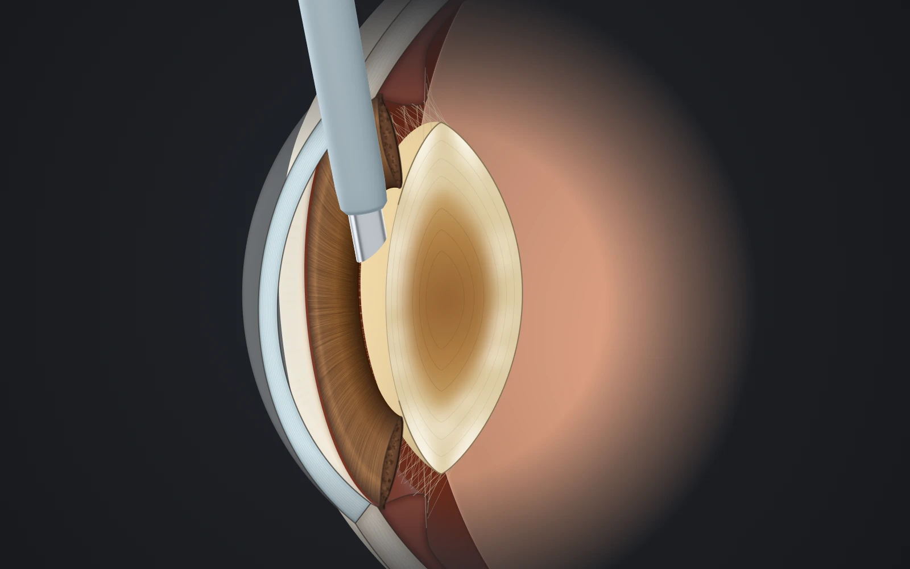

PL.01الماء الأبيض والعدسات
جراحة الماء الأبيض (الساد)
الماء الأبيض (الساد) عتامة تدريجية في عدسة العين الطبيعية، وهو من أكثر أسباب ضعف الرؤية شيوعاً مع التقدم في العمر. لا يُعالج بالنظارة أو القطرات، والعلاج الفعّال حين يؤثر في حياتك هو جراحة تُزال فيها العدسة المعتمة وتُزرع مكانها عدسة صناعية شفافة.
حالة المراجعة الطبية: مسودة بانتظار مراجعة د. معن

العدسة الطبيعيةتُعتم تدريجياً في الماء الأبيضمحفظة العدسةغشاء رقيق تُثبَّت فيه العدسة المزروعةالقرنيةالنافذة الشفافة في مقدمة العينFIG. Bالتشريح: أين يحدث الإجراء؟
التشريح: أين يحدث الإجراء؟

FIG. A ⟶ B · ×1.9
 02العدسة الطبيعية03محفظة العدسة
02العدسة الطبيعية03محفظة العدسة- 01القرنية
- النافذة الشفافة في مقدمة العين
- 02العدسة الطبيعية
- تُعتم تدريجياً في الماء الأبيض
- 03محفظة العدسة
- غشاء رقيق تُثبَّت فيه العدسة المزروعة
- 04الشبكية
- تستقبل الصورة وترسلها إلى الدماغ